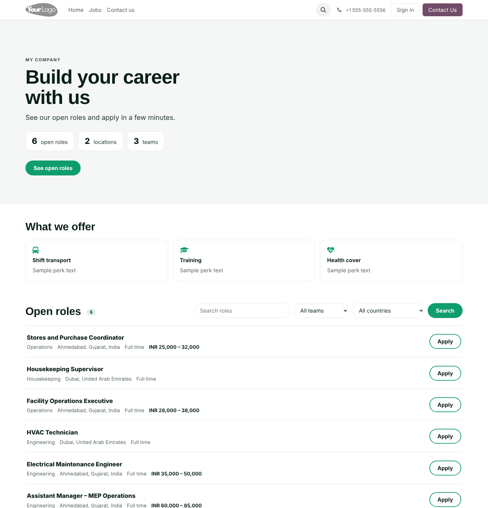

- Four layouts: Aurora (cards), Ledger (list), Mosaic (grouped by department), Spotlight (newest job featured).
- Yours to set: accent colour, headline, cover picture, introduction, perks, closing section.
- Search and filters by team and country, drawn only from jobs that are really published.
- Several pages: one per brand, branch or department group, each at its own address.
- Applicants stay in Odoo: Apply opens Odoo's own application form.
- Search-engine data: each job page carries JobPosting structured data built from the job's stated facts.

The screenshots show sample jobs made for the picture. Requires Website, Recruitment and Jobiba Recruitment Sync. Support: info@jobiba.com